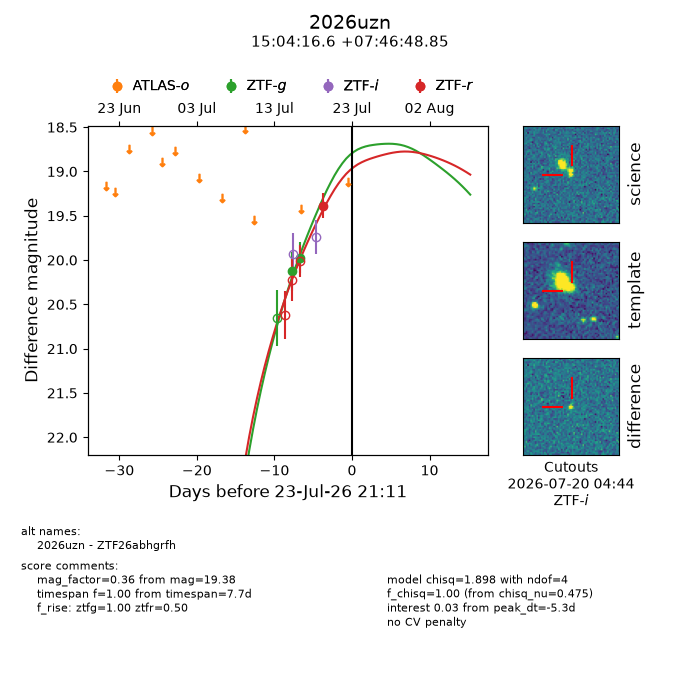
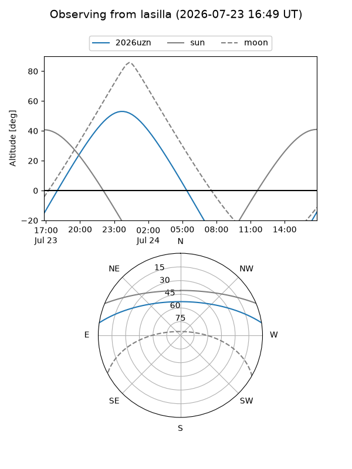
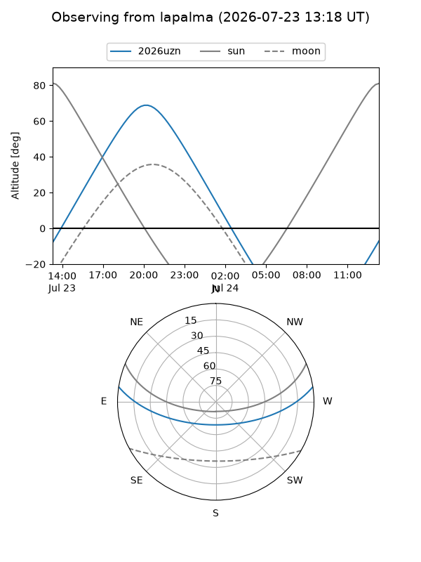
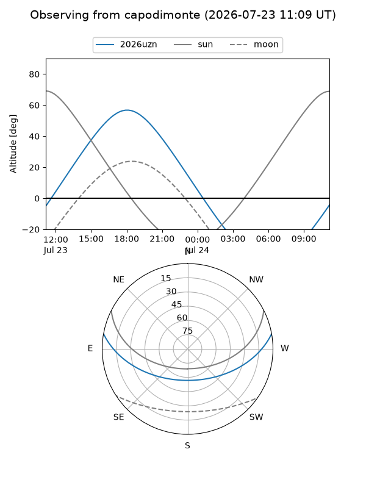
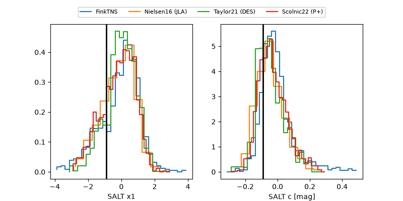

2026uzn
Target 2026uzn at 2026-07-23 21:14
Aliases and brokers:
FINK-ZTF: ztf.fink-portal.org/ZTF26abhgrfh
Lasair-ZTF: lasair-ztf.lsst.ac.uk/objects/ZTF26abhgrfh
ALeRCE-ZTF: alerce.online/object/ZTF26abhgrfh
YSE-PZ: ziggy.ucolick.org/yse/transient_detail/2026uzn
TNS name: wis-tns.org/object/2026uzn
Direct TNS query: direct search
alt names
ZTF26abhgrfh (ztf,fink_ztf)
2026uzn (tns,yse)
Coordinates:
equatorial (ra, dec) = 226.0694,+7.78024
equatorial (HMS+DMS) = 15:04:16.65,+07:46:48.85
galactic (l, b) = (7.5459,+53.08237)
Flags:
TNS type: nan
peak dt: -5.3
Photometry:
last ztfg=19.97, ztfr=19.38
2 ztfg, 1 ztfr detections
Lightcurve

Visibility



Additional plots
